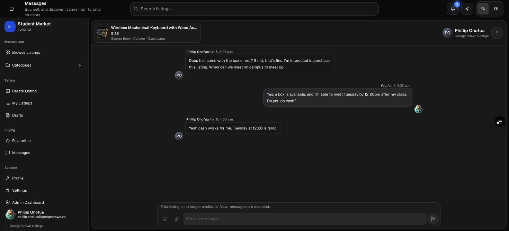
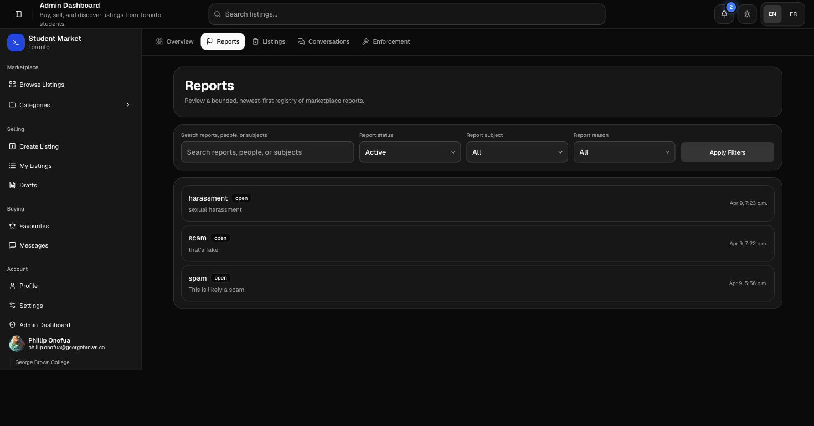
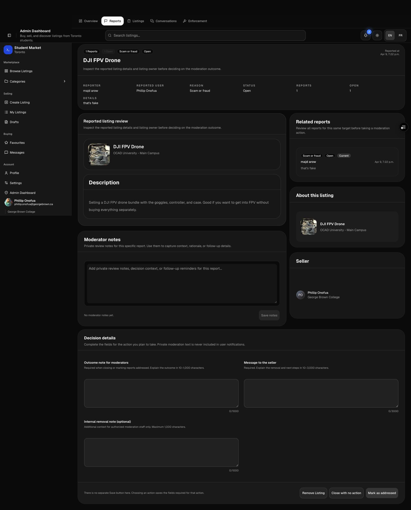

Derive school identity from verified account data.
Registration validates a Toronto school domain in the form and again in a before-user-created Auth hook. Protected identity fields are written only through trusted paths.
Engineering case study · Full-stack marketplace
I led and built a marketplace whose technical scope extends well beyond listing cards. The system combines request-scoped authentication, server-rendered catalogue queries, recoverable listing writes, realtime messaging, controlled media storage, and an auditable moderation platform.
System framing
A listing can be a draft, waiting for review, rejected, active, sold, or retired. A conversation can be open, temporarily closed, permanently closed, or reopened. A sanction can be active, acknowledged, appealed, modified, revoked, or expired. Those states affect what each user can read and write.
I kept those rules close to the data. The interface explains the current state, but PostgreSQL verifies ownership, current revisions, account standing, role capability, and lifecycle transitions before an important write is accepted.
Request architecture
The Next.js proxy refreshes the Supabase session and fails closed when account standing is unavailable or banned.
App Router pages use a cookie-scoped server client for initial data, while growing registries use explicit pagination limits.
Client Components handle validation, local recovery state, uploads, optimistic feedback, and realtime subscriptions.
PostgreSQL rechecks the actor, expected state, and payload before changing data or appending immutable history.
01 · Catalogue and search
The catalogue is rendered on the server from active listings only. The home route fetches a maximum of six records per category and bounds each listing to ten ordered images.

02 · Listing write protocol
Each create, edit, status change, or retirement begins with a stable operation identifier and a canonical payload hash. A small local journal keeps only bounded recovery identifiers, while the server stores the durable write intent.
Image paths are reserved before upload. The final commit verifies the reservation, owner, listing revision, required fields, and image order in one trusted database path. Ambiguous network failures replay the same operation instead of issuing a second write, and abandoned objects enter a bounded cleanup queue.

03 · Messaging and media
A thread loads 40 messages at a time and retains a bounded 160-message client window. New inserts and reaction changes arrive through unique Supabase Realtime channels, then merge by stable database identifiers.
A media send reserves up to three exact conversation and user paths, uploads files, and completes through an idempotent message RPC. If the operation aborts, reservations are released only after Storage cleanup. Closed conversations keep their readable history, but database guards reject new messages, attachments, and reactions even if a client bypasses the disabled composer.


04 · Moderation architecture
Administrative pages recheck the current Auth user, current application standing, and a role-to-capability matrix before loading a trusted workflow. The service-role client is isolated in a server-only module and is never passed to browser code.


05 · Responsive application shell
The same server routes and database policies support both desktop and mobile. Responsive shells change navigation, card density, and thread composition without creating a separate mobile data path.
Every major route includes a matching loading skeleton. Forms expose field errors, focus the first invalid control, preserve touch targets, and provide English and French interface copy.


06 · Security and reliability
The repository separates public projections, participant data, staff-only context, and service operations. The important behavior is enforced again at the database layer and exercised through both static contract tests and isolated PostgreSQL tests.
Registration validates a Toronto school domain in the form and again in a before-user-created Auth hook. Protected identity fields are written only through trusted paths.
RLS, ownership predicates, private schemas, revoked direct execution, and narrow invoker RPCs limit what public, authenticated, staff, and service actors can do.
Canonical payload hashes, stable operation identifiers, row locks, expected revisions, replay windows, and tombstones prevent a lost response from becoming a duplicate action.
Listing and message uploads use path validation, reservations, size and type limits, reference guards, cleanup leases, and account-retirement barriers.
Immutable audit and decision records retain staff actions. User-safe standing and notification projections intentionally omit private notes, metadata, and worker state.
Announcement delivery and image cleanup use secret-protected worker routes, row leases, small claim windows, stable idempotency keys, and explicit terminal states.
Realtime signals contain no sensitive message or moderation text. They tell the recipient client to reload its RLS-scoped notifications, while safety and enforcement notices remain always on.
Blocks affect conversation entry, bans fail marketplace writes closed, standing records remain readable, and password-confirmed deletion establishes media retirement barriers before removing Auth data.
Catalogue pages, inboxes, message history, report registries, conversations, enforcement records, and audit views all impose explicit limits and stable ordering.
The local security command passes 263 tests, including fresh migration-chain execution and isolated PostgreSQL checks. ESLint and the Next.js production build also pass.
What this project demonstrates
The screenshots show the application surface. The deeper work is the boundary beneath it: authenticated server rendering, relational state, recoverable writes, controlled storage, realtime synchronization, private moderation data, immutable history, and tests that execute the actual PostgreSQL migration chain.
Continue exploring